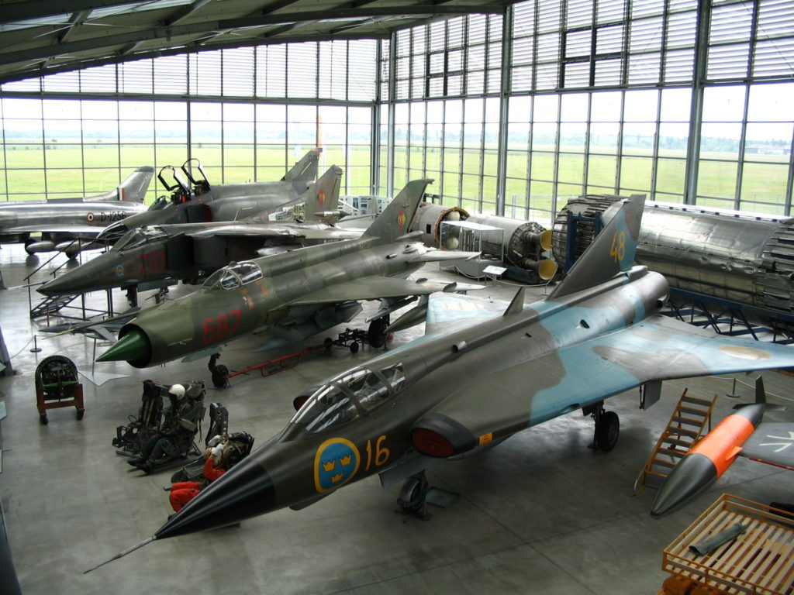

Andrea Cagalli
London
Miles Buildings
Bici
Tre Cime,
Lago di Braies
Malta ☑️
5/08 - 11/08
Molina ☑️
Val Sorda
Germania ☑️
Museo veicoli militari
Castello di Neuschwanstein
Visita di Monaco e Alpi
24-26 luglio
|
Andrea Cagalli |
London | |
Bici |
|
Malta ☑️ |
|
Molina ☑️ |
|
Germania ☑️ |  |